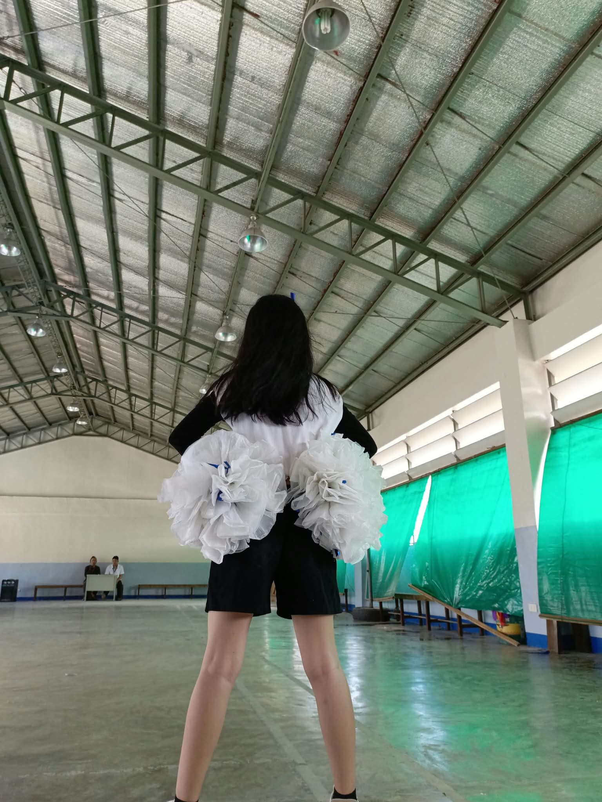

GET TO KNOW MEABOUT MEA little introduction about who I am. |
| Home | About Me | My Dancing | Gallery | Contact |
Who Am I? Hi! I'm Jane, 20 years old, and I'm from Siargao Island, Philippines. I am currently a college student who is still learning, exploring new things, and figuring out what I want to achieve in life. I would describe myself as someone who enjoys simple things and spending time doing activities that make me happy. I also love discovering new things and learning from different experiences. One thing that has been part of my life since I was young is dancing. I started dancing when I was five years old, and until now, it is still something I genuinely enjoy. I love it because I feel free whenever I dance, and it is something I know I'm good at. My Personality and InterestsI enjoy listening to music, dancing, and doing things that allow me to express myself. I also like learning new things and spending time on activities that interest me. I may not be perfect at everything, but I always believe that there is something new to learn and improve. I prefer being myself and enjoying the things that make me happy.
My Personal Motto"Just be yourself and enjoy every moment." I chose this as my personal motto because I believe that life is not about being perfect or comparing yourself to others. It is about accepting who you are, enjoying what you do, and making the most out of every experience. I want to keep doing the things I love, continue learning, and never be afraid to express myself. Be yourself, do what you love, and enjoy the journey. |